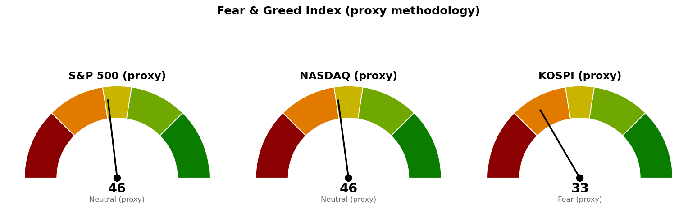

미국 지수·섹터·금리·유가·변동성지수는 9월 15일(현지) 정규장 장중 수치이며 종가가 아닙니다(개장 약 1시간 30분 경과 시점). 코스피와 니케이 225는 9월 15일 마감 수치이되 자료 제공처가 확정 종가를 주지 않아 같은 날 시간별 마지막 체결가로 채운 값입니다.
직전 브리핑은 9월 15일 낮 12시에 한국장 장중 수치로 썼습니다. 지금은 코스피 9월 15일 마감과 진행 중인 뉴욕 9월 15일 정규장으로 채점합니다.
| 직전에 건 조건 | 판정 | 근거 |
|---|---|---|
| S&P 500 종가 7,668 회복 그리고 30년 금리 5.286% 아래 → 경고 해제 | 미충족 | 현재 7,586으로 조건선 82포인트(하루 평균 변동폭의 1.34배) 아래입니다. 30년 금리는 5.367%로 조건선보다 0.081%포인트 높아, 직전의 0.043%포인트에서 0.038%포인트 더 벌어졌습니다 |
| S&P 500이 7,580 아래에서 정규장 마감 → 보유분 축소 검토 | 아직 진행 중 | 장중 저가 7,572.69로 이 가격 아래를 지나갔으나 현재 7,586입니다. 마감은 한국시간 9월 16일 05:00입니다 |
| S&P 500 다음 지지 7,599 | 충족(장중) | 현재 7,586으로 13포인트 아래에 있습니다. 종가 확정은 오늘 마감입니다 |
| 나스닥 사다리 1차 25,998 도달 | 충족(집행 조건은 미충족) | 9월 15일 장중 저가 25,949로 닿았습니다. 집행 조건인 "9월 17일 이후 도달분"은 채우지 못했습니다 |
| 나스닥 다음 지지 25,888 | 미도달 | 저가 25,949에서 멈춰 61포인트(0.20배) 위였습니다 |
| 코스피 다음 지지 6,662 및 사다리 1차 6,662 | 충족 | 9월 15일 저가 6,582로 닿았고 종가 6,620으로 이 가격 아래에서 마쳤습니다. 사다리 1차의 집행 조건인 9월 17일 이후는 아직입니다 |
| 코스피·나스닥 사다리 취소선(6,024 / 25,526) | 미충족 | 코스피는 596포인트(2.26배), 나스닥은 478포인트(1.58배) 위입니다 |
| 브렌트유 107.63달러 복귀 | 판정 보류 | 아래 자료 문제 참조 |
자동 채점이 코스피 9월 15일 봉을 건너뛰었습니다. 직전 브리핑이 한국장이 열려 있던 낮 12시에 기준선을 등록하는 바람에 채점 시작일이 9월 15일로 찍혔고, 채점은 그 다음 봉부터 돌기 때문에 정작 계획이 처음 시험받은 그날 마감이 빠졌습니다. 그래서 위 코스피 두 줄은 자동 채점 결과가 아니라 9월 15일 봉(시가 6,659 · 고가 6,715 · 저가 6,582 · 종가 6,620)을 직접 대고 판정한 것입니다. 이번 브리핑은 미국장이 열려 있는 동안 등록하므로 같은 일이 코스피에서 반복되지는 않습니다.
브렌트유는 이번 브리핑에서 판정에 쓰지 않습니다. 9월 15일 브렌트 일봉이 시가 106.31달러인데 고가가 103.50달러로 나와 자료 자체가 서로 맞지 않습니다. 같은 자료에서 직전 브리핑이 9월 14일 정산가로 적은 107.18달러도 지금은 105.68달러로, WTI 102.97달러도 101.39달러로 다르게 나옵니다. 브렌트 수치를 근거로 아무 판정도 하지 않고, 유가는 WTI만 인용합니다.
직전 계획은 살아 있습니다. 기준선 세 개 — 코스피 6,815, 나스닥 26,271, S&P 500 7,668 — 를 그대로 둡니다. 20일선은 코스피가 6,799에서 6,791로, 나스닥이 26,269에서 26,244로, S&P 500이 7,662에서 7,655로 내려왔지만 이 정도 이동으로 기준선을 다시 그리지 않습니다. 사다리 회차 가격과 취소선도 직전과 같은 숫자입니다.
다음 지지는 두 곳에서 옮깁니다 — 조건이 충족됐기 때문입니다. 코스피는 6,662를 종가로 내줬으므로 다음 지지를 6,409로, S&P 500은 7,599를 장중에 내줬으므로 7,565로 내립니다. 두 가격 모두 직전 브리핑이 "그 아래 다음 자리"로 이미 적어 둔 값이며 새로 만든 숫자가 아닙니다. 나스닥은 25,888을 지켜 다음 지지가 그대로입니다.
직전 판단의 방향은 맞았습니다. 경고 단계를 유지하고 사다리를 FOMC 뒤로 미뤄 둔 것이 하루 더 하락한 결과와 같은 방향이었습니다. 다만 브렌트 조건선을 계속 들고 있었던 것은 자료가 이 정도로 흔들리는 항목을 판정에 넣어 둔 잘못이며, 이번에 뺍니다.
| 줄 | 내용 |
|---|---|
| 현재 위치 | 6,620 (9/15 마감, -0.96%, 고가 6,715 · 저가 6,582). 20일선(최근 20일 평균 가격선이되 최근 가격에 더 무게를 두는 지수이동평균) 6,791보다 170포인트(하루 평균 변동폭 264의 0.64배) 아래, 50일선 6,887보다 266포인트(1.01배) 아래. 상대강도지수(최근 14일 동안 오른 폭과 내린 폭의 비율을 0~100으로 나타낸 값) 45.4 |
| 기준선 | 6,815 (직전 그대로) — 일봉 종가로 위에서 마쳐야 인정합니다. 장중에 넘는 것은 판정이 아닙니다. 현재가에서 195포인트(0.74배) 위입니다 |
| 지키면 | 7,025. 5월 20일부터 9월 10일까지 6회 반응하며 지지에서 저항으로 역할이 바뀐 가격대이고 박스 상단과 겹칩니다. 현재가에서 404포인트(1.53배) 위입니다 |
| 못 지키면 | 6,409. 2월 27일부터 9월 3일까지 5회 반응하며 저항에서 지지로 바뀐 가격대에 6,400 단위 가격과 스윙 저점이 겹칩니다(겹침 점수 4.5). 현재가에서 212포인트(0.80배) 아래이며, 그 아래는 박스 하단 6,024까지 385포인트(1.46배)가 비어 있습니다 |
| 매수 사다리 | 1차 6,662 계좌의 5%, 2차 6,409 계좌의 5%. 취소선 6,024(40일 박스 하단) — 일봉 종가로 잃으면 남은 회차를 집행하지 않습니다 |
| 예상 기간 | 기준선까지 0.74일치 변동폭, 도착지 7,025까지 1.53일치, 다음 지지 6,409까지 0.80일치입니다. 되돌림 없이 한 방향으로 갈 때의 최단이 각각 1·2·1 거래일이며, 그 이상은 근거를 댈 수 없어 상한을 적지 않습니다 |
사다리 1차는 가격 조건을 이미 채웠고 현재가가 그 아래입니다. 9월 17일 코스피 개장 후 그 시점 가격이 6,662 아래면 그대로 집행합니다. 다만 6,662는 9월 15일 종가로 내준 가격이므로 이 회차는 지지에서 되받는 매수가 아니라 이탈한 자리에서 받는 매수가 되며, 그만큼 2차 6,409까지 이어질 여지가 큽니다. 취소선까지 전부 물리면 1차는 -9.58%, 2차는 -6.01%가 되어 계좌 대비 -0.78% 손실입니다. 직전과 같은 숫자입니다.
기준선 6,815로 가는 길목에는 6,673~6,800 구간이 있습니다. 주봉 38.2% 되돌림선과 일봉 61.8% 되돌림선, 20일선 6,791, 6,700 단위 가격이 한데 모여 겹침 점수 5.8로 이 부근에서 가장 두꺼운 구간입니다. 기준선을 여기로 내리지는 않지만, 반등이 나오더라도 이 구간에서 한 번 막히는 것이 기준선 회복보다 먼저입니다.
40일 박스는 6,024~7,128이고 박스 안쪽은 매집 우위로 판정됩니다. 다만 직전 40일 구간(7,308~9,160)에서 아래로 내려와 이 박스에 들어온 상태라, 매물을 소화하고 올라가는 국면인지 한 번 더 내려가기 전의 쉬어 가는 국면인지는 아직 갈리지 않았습니다.
코스피 계획은 미국장 결과에 선행 종속됩니다. 세 지수 기준선이 모두 현재가 위에 있어 같은 방향을 가리키고, 코스피의 9월 17일 시가는 그 사이 열리는 FOMC와 뉴욕 세션이 정합니다. 코스피 단독 신호만으로 사다리를 앞당기지 마십시오.
| 줄 | 내용 |
|---|---|
| 현재 위치 | 26,004 (9/15 장중, -0.70%, 고가 26,172 · 저가 25,949). 20일선 26,244보다 240포인트(하루 평균 변동폭 302의 0.79배) 아래, 50일선 26,088보다 84포인트(0.28배) 아래. 9월 14일 종가는 50일선 위였으므로 오늘 아래로 내려온 상태입니다. 상대강도지수 45.7 |
| 기준선 | 26,271 (직전 그대로) — 20일선 26,244와 5월 11일부터 9월 14일까지 8회 반응한 가격대(26,289), 26,200 단위 가격이 겹치는 자리입니다. 일봉 종가로 위에서 마쳐야 유지로 봅니다. 현재가에서 267포인트(0.88배) 위입니다 |
| 지키면 | 26,680. 8월 5일 고점 26,739와 26,600 단위 가격이 겹치고 7거래일 전에도 반응했습니다. 현재가에서 676포인트(2.24배) 위입니다 |
| 못 지키면 | 25,888. 8월 24일 저점 25,911, 5월 7일부터 9월 15일까지 7회 반응한 가격대, 25,800 단위 가격이 겹칩니다. 현재가에서 116포인트(0.38배) 아래입니다 |
| 매수 사다리 | 1차 25,998 계좌의 5%, 2차 25,855 계좌의 5%. 취소선 25,526(7월 8일 저점) — 일봉 종가로 잃으면 남은 회차를 집행하지 않습니다 |
| 예상 기간 | 기준선까지 0.88일치, 도착지까지 2.24일치, 다음 지지까지 0.38일치 변동폭입니다. 다음 지지는 하루 안에 닿을 거리이고, 도착지는 되돌림 없이 진행할 때의 최단이 3 거래일입니다 |
취소선까지 전부 물리면 1차는 -1.82%, 2차는 -1.27%가 되어 계좌 대비 -0.15% 손실입니다. 회차 가격과 취소선이 가까워 손실이 작고, 그만큼 취소선에 닿기도 쉽습니다.
90일 박스는 24,807~26,951이고 박스 안에서 저점이 낮아지고 있어 매집·분산 어느 쪽 우위도 판정되지 않았습니다. 사다리 1차 25,998은 오늘 저가 25,949로 다시 닿았으나 FOMC 결과 확인 전에는 집행하지 않습니다.
| 줄 | 내용 |
|---|---|
| 현재 위치 | 7,586 (9/15 장중, -0.45%, 고가 7,617 · 저가 7,573). 20일선 7,655보다 69포인트(하루 평균 변동폭 61의 1.13배) 아래, 50일선 7,603보다 17포인트(0.28배) 아래. 9월 14일 종가 7,620은 50일선 위였으므로 오늘 아래로 내려온 상태입니다. 상대강도지수 44.1 |
| 기준선 | 7,668 (직전 그대로) — 정규장 종가로 위에서 마쳐야 하며, 장중에 넘는 것은 판정이 아닙니다. 현재가에서 82포인트(1.34배) 위입니다 |
| 지키면 | 7,801. 8월 5일 고점 7,794와 8월 13일 고점 7,817, 90일 박스 상단 7,794가 겹칩니다. 현재가에서 216포인트(3.51배) 위입니다 |
| 못 지키면 | 7,565. 5월 28일부터 오늘까지 5회 반응한 가격대에 7,550 단위 가격과 스윙 고점이 겹쳐 이 부근에서 가장 두꺼운 구간(겹침 점수 3.5)이고, 오늘 장중에도 이 구간에서 반응했습니다. 현재가에서 21포인트(0.34배) 아래이며, 그 위 7,580이 보유분 축소 검토선입니다. 7,565마저 종가로 잃으면 다음은 7,514로 71포인트(1.16배) 아래입니다 |
| 매수 사다리 | 이번에도 S&P 500에는 매수 사다리를 내지 않습니다. 아래 설명 참조 |
| 예상 기간 | 기준선까지 1.34일치, 도착지까지 3.51일치, 다음 지지까지 0.34일치, 축소 검토선까지 0.09일치 변동폭입니다. 축소 검토선은 오늘 안에, 도착지는 되돌림 없이 진행할 때 최단 4 거래일입니다 |
사다리를 내지 않는 이유는 직전과 같고, 오히려 더 좁아졌습니다. 보유분 축소 검토선 7,580과 다음 지지 7,565 사이가 15포인트, 하루 평균 변동폭의 0.24배뿐이라 1차를 사는 가격과 보유분을 줄이라는 신호가 같은 구간에 들어갑니다. 그 아래 7,514(5회 반응 선반에 저항에서 지지로 바뀐 이력과 7,500 단위 가격이 겹칩니다)까지 내려가야 다음 자리가 나오는데, 거기까지 가려면 7,580을 이미 종가로 잃은 뒤입니다. S&P 500 노출은 나스닥 사다리로 갈음하십시오.
세 지수 모두 FOMC 결과를 확인하기 전에는 어떤 회차도 집행하지 않습니다. 나스닥 1차와 코스피 1차는 가격에는 닿았으나 둘 다 FOMC 이전이므로 집행 대상이 아니며, 9월 17일부터 유효합니다. 두 사다리를 모두 채우고 취소선까지 전부 물리면 계좌 대비 합계 -0.93%입니다.
| 지수 | 종가/현재 | 등락 | 고가 | 저가 |
|---|---|---|---|---|
| S&P 500 (9/15 장중) | 7,586 | -0.45% | 7,617 | 7,573 |
| 나스닥 종합 (9/15 장중) | 26,004 | -0.70% | 26,172 | 25,949 |
| 코스피 (9/15 마감) | 6,620 | -0.96% | 6,715 | 6,582 |
| 니케이 225 (9/15 마감) | 63,612 | +0.19% | 64,101 | 63,067 |
미국 두 지수는 전 세션 종가 아래에서 출발해 아래쪽으로 더 밀린 상태입니다. S&P 500은 시가 7,612에서 저가 7,573까지 내려갔다 7,586으로 올라와 있고, 그 저가는 보유분 축소 검토선 7,580 아래이자 다음 지지 7,565 위입니다. 나스닥 저가 25,949는 사다리 1차 25,998 아래 49포인트까지 내려간 값이며 다음 지지 25,888 위에서 멈췄습니다. 두 지수 다 50일선을 아래로 내준 상태로 거래되고 있어, 오늘 마감이 그 이탈을 종가로 굳히는지가 판정 대상입니다.
코스피는 시가 6,659로 출발해 저가 6,582까지 밀린 뒤 6,620으로 마쳤습니다. 저가 6,582는 다음 지지이자 사다리 1차 6,662에서 80포인트 더 아래로 내려간 값입니다. 니케이 225만 +0.19%로 아시아에서 유일하게 올랐습니다.
미국 섹터를 20일 초과수익(SPDR 업종 ETF의 지수 대비 초과 성과)으로 줄 세운 결과입니다. 하루치 등락률이 아니라 이 값이 주도섹터 판정 기준입니다.
| 주도 (20일 초과) | 20일 | 5일 | 1일 | 부진 (20일 초과) | 20일 | 1일 | |
|---|---|---|---|---|---|---|---|
| 에너지 (XLE) | +7.05% | +2.59% | +2.27% | 산업재 (XLI) | -7.40% | -0.28% | |
| 커뮤니케이션 (XLC) | +4.89% | +3.33% | -0.52% | 유틸리티 (XLU) | -3.99% | -0.29% | |
| 헬스케어 (XLV) | +2.35% | +1.39% | +0.32% | 임의소비재 (XLY) | -2.68% | -1.00% |
에너지가 20일 초과수익 +7.05%로 1위를 지켰고 오늘 하루도 지수를 2.27%포인트 앞서, 직전 브리핑에서 하루치가 뒤졌던 것을 되돌렸습니다. WTI가 104.63달러로 +3.20% 오른 것과 같은 방향입니다. 기술(XLK)은 20일 초과 -1.16%로 지수 아래에 머물러 있고 하루치는 +0.40%입니다. 하루치 등락률로는 에너지 +1.81%만 오르고 나머지 열 개 업종이 전부 내려, 오늘 상승의 폭이 에너지 한 곳으로 좁혀져 있습니다.
한국 섹터는 테마형 ETF 기준이라 미국 업종 ETF와 성격이 다릅니다. 20일 초과수익 상위는 건설 +17.10%, 2차전지 +8.76%, 은행 +8.68%, 반도체 +1.60%이고, 하위는 자동차 -10.12%, 방산 -7.00%, 헬스케어 -5.68%입니다. 하루치로는 2차전지 +3.81%, 건설 +2.68%, 인터넷 +1.24%가 앞서고 조선 -3.88%, 방산 -3.67%, AI전력기기 -2.37%가 뒤집니다. 건설과 2차전지는 20일과 하루치가 같은 방향이라 지수가 -0.96%로 내려앉은 날에도 주도 자리를 유지했습니다.
훑기 배치가 돌린 발굴에서 넘어온 새 후보는 이번 브리핑에 없습니다.
| 항목 | 최근값 | 직전 | 등락 | 기준 시점 |
|---|---|---|---|---|
| 미 10년 국채 금리 | 4.998% | 4.961% | +0.75% | 9/15 장중 |
| 미 30년 국채 금리 | 5.367% | 5.329% | +0.71% | 9/15 장중 |
| WTI | 104.63달러 | 101.39달러 | +3.20% | 9/15 장중 |
| 브렌트유 | 판정 보류 | — | — | 자료 불일치 |
| 변동성지수 (VIX) | 17.78 | 17.10 | +3.98% | 9/15 장중 |
10년 금리 4.998%는 2007년 이후 가장 높은 자리이고, 30년은 5.367%로 경고 해제 조건선 5.286%에서 0.081%포인트 위입니다. 직전 브리핑 때 0.043%포인트까지 좁혀졌던 거리가 다시 벌어진 방향입니다. 금리가 이 방향을 유지하는 한 해제 조건 두 개 중 하나는 채워지지 않습니다.
미국 국채 금리의 공식 일별 시계열은 9월 11일자(10년 4.96% · 30년 5.35%)까지만 발표돼 있어, 위 9월 15일 수치는 국채 금리 지수의 장중 값입니다.
유가는 WTI만 적습니다. 브렌트 9월 15일 일봉이 시가보다 고가가 낮게 나오는 등 자료가 서로 맞지 않아 이번 브리핑은 브렌트 수치를 어떤 판정에도 쓰지 않습니다.
변동성지수는 17.10에서 17.78로 올랐습니다. FOMC를 하루 앞두고 오르는 중이며, 자기 과거 3년 분포에서 백분위 65.9 자리입니다.
1. 향후 1년간 최소 두 번 인상, CNBC 연준 서베이 (CNBC, 9월 15일) 응답자 다수가 앞으로 1년 안에 두 번 이상의 인상을 본다고 답했고, 견해가 바뀐 주된 이유로 높아진 유가를 꼽으면서도 약 4분의 3은 인플레이션 문제가 에너지에 국한되지 않는다고 봤습니다. 내일 인상 자체는 이미 가격에 들어갔으므로 지수를 움직일 변수는 12월 이후 경로이며, 이것이 사다리 회차를 9월 17일 이후로 묶어 둔 이유입니다.
2. 10년 국채 금리가 2007년 이후 최고 (CNBC, 9월 15일) 국채 매도가 깊어지며 10년이 4.998%까지 올랐습니다. 30년이 5.367%로 함께 오른 것과 같은 움직임이고, 경고 해제 조건인 30년 5.286%와의 거리가 직전 0.043%포인트에서 0.081%포인트로 벌어졌습니다. 해제 조건 두 개 중 금리 쪽은 이 수치로는 채워지지 않습니다.
3. 사우디 송유관 가동 중단과 후티 공격으로 WTI 104달러 위 복귀 (CNBC, 9월 15일) 예멘 후티 세력의 사우디 공격이 이어지며 유가가 되올랐습니다. 에너지가 20일 초과수익 +7.05%로 주도 자리를 지키고 오늘 하루 홀로 오른 것과 같은 사건이며, 1번 서베이가 지목한 "유가 때문에 견해를 바꿨다"는 경로와도 이어집니다. 유가가 이 자리에 머무는 동안에는 30년 금리 5.286% 조건이 채워지기 어렵습니다.
뉴스 수집에서 MarketWatch Top Stories 피드는 응답이 없어 이번 선별에서 빠졌습니다.
| 지수 | 점수 | 구간 | 직전(9/15 낮) |
|---|---|---|---|
| S&P 500 | 46.3 | 중립 | 50.1 |
| 나스닥 | 45.8 | 중립 | 50.4 |
| 코스피 | 33.3 | 공포 | 35.5 |

세 점수 모두 공식 CNN Fear & Greed 지수가 아니라 모멘텀·상대강도·변동성·안전자산 선호 네 항목으로 계산한 대용 지표입니다. 변동성 항목은 그 지수의 변동성이 자기 과거 3년 분포에서 차지하는 자리로 산출하며, 미국은 변동성지수 17.8이 백분위 65.9(표본 754일), 코스피는 내재변동성 지수가 없어 20일 실현변동성 연율화 43.7%가 백분위 83.2(표본 707일)입니다. 직전 브리핑과 같은 잣대이므로 점수를 그대로 비교할 수 있습니다.
미국 두 지수는 50 위에서 46.3·45.8로 내려와 중립 구간의 아래쪽에 들어왔습니다. 네 항목은 모멘텀 60.6·59.0, 상대강도 44.1·45.7, 변동성 34.1, 안전자산 선호 43.3·41.6이고, 하락분의 대부분은 변동성 항목 7.7포인트에서 나왔습니다. 모멘텀만 홀로 60을 넘고 나머지 셋이 중립 아래인 배열은 직전과 같습니다.
코스피는 35.5에서 33.3으로 내려와 공포 구간에 더 들어갔습니다. 네 항목은 모멘텀 36.3(직전 36.8), 상대강도 46.9(47.4), 변동성 16.8(16.9), 안전자산 선호 35.3(43.0)이고, 하락분은 안전자산 선호 7.7포인트에서 나왔습니다. 변동성 16.8은 네 항목 중 가장 낮은 값으로, 실현변동성이 자기 과거 분포의 위쪽 83.2 백분위에 있다는 뜻입니다.
| 날짜 (한국시간) | 이벤트 | 확인할 것 |
|---|---|---|
| 9월 16일 05:00 | 뉴욕 정규장 마감 (미국 9/15) | S&P 500이 7,580 위에서 마치는지, 7,565를 지키는지, 나스닥이 25,888을 지키는지 |
| 9월 16일 15:30 | 코스피 마감 | 6,409를 지키는지, 6,662를 종가로 되찾는지 |
| 9월 17일 03:00~03:30 | FOMC 금리 결정과 기자회견 (현지 9/16) | 인상 폭, 12월 이후 경로, 30년 금리가 5.286% 아래로 오는지 |
| 9월 17일 09:00 | 코스피 개장 | 사다리 1차 집행 조건 개시 — 그 시점 가격이 6,662 아래면 집행 |
| 9월 17일 21:30 | 주간 신규 실업수당 청구 | 고용 둔화가 금리 부담을 상쇄하는지 |
장부에 기록된 보유는 16개 종목입니다. 직전 브리핑에서 관심종목이던 Bloom Energy (BE)는 9월 15일 1주 매수가 기록돼 보유로 넘어왔고, 관심종목 목록은 비었습니다.
1. 신규 위험자산 편입 중단을 유지합니다. 해제 조건 두 개 중 어느 것도 충족되지 않았고, 30년 금리는 조건선에서 오히려 멀어졌으며, FOMC 결과는 아직 나오지 않았습니다. 현재가 부근에서 지수든 종목이든 새로 담지 마십시오. 2. 매수 쪽 — 이번 브리핑에서 새로 살 자리는 없습니다. 코스피 1차 6,662와 나스닥 1차 25,998 모두 가격에는 닿았으나 FOMC 이전이라 집행 대상이 아닙니다. 9월 17일부터 각각 계좌의 5%로 유효하며 취소선은 6,024와 25,526, 판정은 일봉 종가입니다. S&P 500에는 사다리를 내지 않습니다. 3. Bloom Energy (BE)의 분할 매수 신호는 9월 17일까지 보류합니다. 9월 15일 장중 저가 259.89달러로 종목 리포트의 진입가 270.25달러 아래를 지나 분할 매수 조건을 채웠습니다. 보유 1주·평단 258.87달러·현재 263.40달러(+1.7%)입니다. 다만 1번의 편입 중단이 지수 사다리와 개별 종목에 똑같이 걸리므로, 이 회차도 FOMC 뒤로 미룹니다. 손절선은 241.56달러, 관망 종료 기준은 245.60달러입니다. 4. USA Rare Earth (USAR)는 30주 전량 손절 조건을 채웠습니다. 현재 15.31달러로 집행 손절 15.34달러 아래를 지났습니다. 보유 30주·평단 17.88달러 기준 -14.4%(-77.39달러)입니다. 오늘 마감으로 확정 판정하되, 장중에 손절 가격을 이미 지난 상태이므로 정리하십시오. 5. Fluence Energy (FLNC)는 오늘 미국장 종가가 판정입니다. 9월 15일자 리포트가 "오늘 종가로 9.95달러를 되찾지 못하면 270주 전량 정리, 그 전이라도 종가가 9.16달러 아래면 그날 정리"로 걸었습니다. 현재 9.23달러이므로 9.95달러까지 +7.8%가 필요하고, 관망 종료 기준 9.16달러까지는 하루 평균 변동폭의 0.1배입니다. 한국시간 9월 16일 05:00 마감으로 판정하십시오. 보유 270주·평단 27.42달러 기준 -66.3%(-4,910.46달러)입니다. 6. GE Vernova (GEV)는 전량 손절이 확정된 상태입니다. 9월 14일 저가 868.25달러로 집행 손절 880.14달러에 닿았고, 관망 종료 기준 890.23달러도 종가로 내줬습니다. 현재 876.19달러, 보유 1주·평단 1,009.58달러 기준 -13.2%(-133.39달러)입니다. 장부에 1주가 그대로 있으니 매도하셨다면 봇에 수량·단가·날짜를 보내 주십시오. 7. LightPath (LPTH) 200주는 유지, Netflix (NFLX) 10주도 유지입니다. LightPath는 현재 9.15달러로 판정선 8.93달러까지 하루 평균 변동폭의 0.21배가 남았고, 일봉 종가가 8.93달러 아래면 전량 정리입니다. Netflix는 9월 14일 종가 80.32달러로 회복선 78.19달러를 넘었으나 오늘 장중 77.86달러로 다시 아래에 있습니다. 추가 진입 여부는 종목 리포트에서 따로 판단하며, 이번 브리핑에서는 1번에 따라 추가하지 않습니다. 8. 한국 보유종목 셋은 기준 가격 바로 앞입니다. 삼성전자 (005930.KS)는 248,000원으로 집행 손절 247,086원까지 914원(하루 평균 변동폭의 0.07배), SK하이닉스 (000660.KS)는 1,684,000원으로 회복선 1,720,275원까지 0.31배, LS ELECTRIC (010120.KS)는 195,200원으로 회복선 198,956원까지 0.32배입니다. 9월 16일 15:30 마감으로 판정하십시오. 삼성전자는 손절선이 하루 안에 닿을 거리이므로 그날 종가가 아니라 저가 도달로 집행합니다. 9. 분석한 적 없는 7개는 이번에도 판정 불가입니다. 삼성물산 (028260.KS)·SOL AI반도체TOP2플러스 (0167A0.KS)·TIGER 코리아AI전력기기TOP3플러스 (0117V0.KS)·SOL 반도체전공정 (475300.KS)·TIGER 미국배당다우존스 (458730.KS)·Alibaba (BABA)·MP Materials (MP)에는 등록된 기준 가격이 없어 손절선도 목표도 없습니다. 리포트가 나오기 전까지 추가 매수도 정리도 하지 마십시오.
다음 세션에 볼 것 하나 — 한국시간 9월 16일 05:00 S&P 500 종가가 7,580 위인지입니다. 위에서 마치면 경고 단계를 그대로 유지하고, 아래에서 마치면 보유분 축소 검토로 한 단계 올립니다.
이 문서는 참고 정보이며 투자자문이 아닙니다. 모든 수치는 위에 적은 기준 시각의 시장 자료에서 가져온 것이고, 투자 판단과 그 결과에 대한 책임은 투자자 본인에게 있습니다.